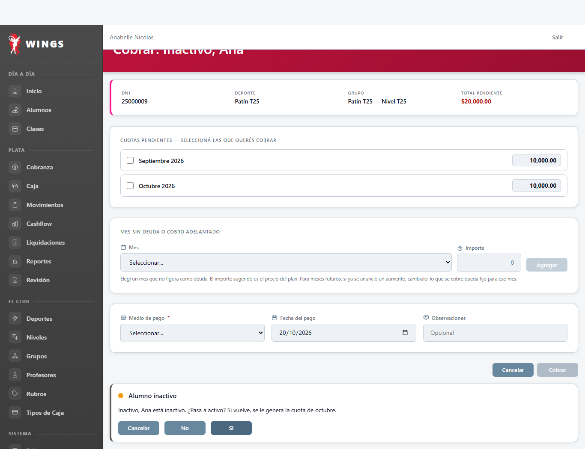
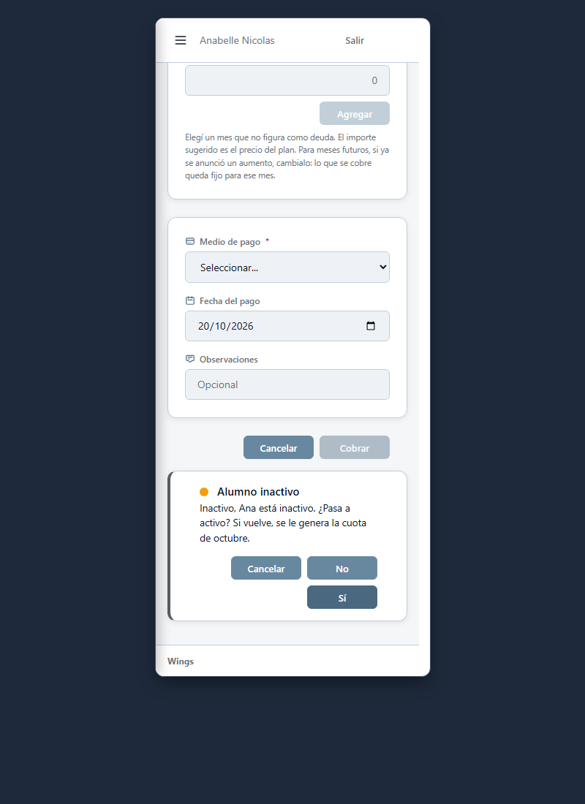
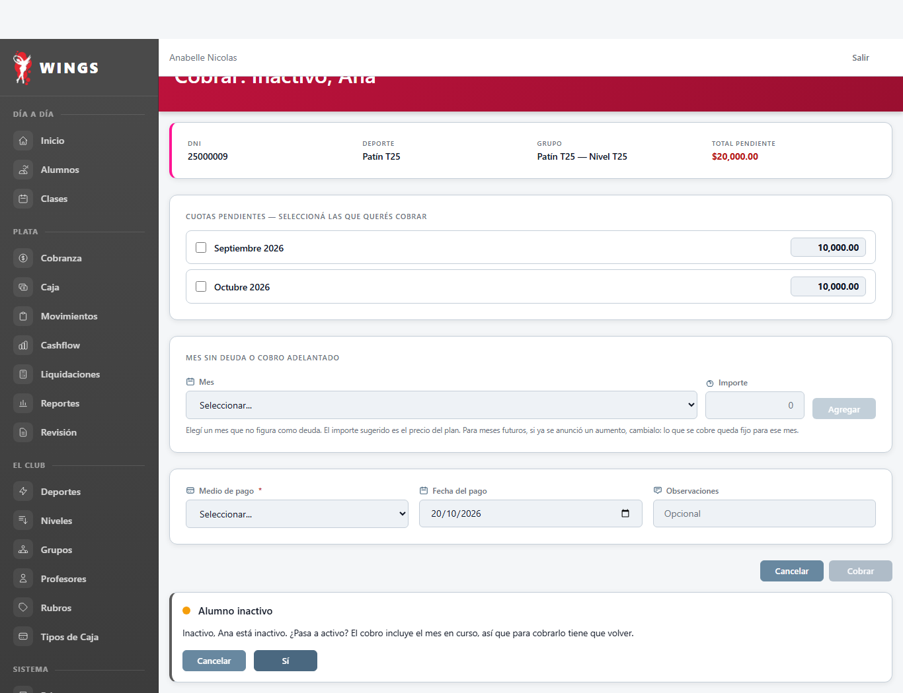

T25 — Cobrar a un alumno inactivo pregunta si pasa a activo
28/10/2026 · Verificación Gemini CAB · Chrome real, aplicación local y alumna inactiva de prueba.
Regla de Carlos (11/10 y 28/10):
Al cobrarle a un alumno inactivo, la pantalla pregunta «¿Pasa a activo?» con un panel en la misma página:
- Sí: se reactiva y se genera la cuota del mes en curso si el cobro no la incluía (T38).
- No: se cobra lo elegido y el alumno sigue inactivo. No se genera la cuota del mes ni corre el descuento de reingreso.
- «No» solo se ofrece con deuda vieja: si el cobro incluye el mes en curso o uno futuro, pagar el mes es volver y solo aparecen Sí y Cancelar.
1. Cobro de deuda vieja: ofrece Sí, No y Cancelar
Se cobra septiembre (período anterior). Como el alumno está inactivo y solo paga deuda vieja, el panel pregunta si vuelve a activo permitiendo responder No para saldar la deuda manteniéndose inactivo.




2. Cobro que incluye el mes en curso: solo Sí y Cancelar
Se cobra octubre (mes en curso). Al pagar el mes corriente o adelantado, pagar es volver. El botón No no se muestra; solo figuran Cancelar y Sí.



Control de captura y diseño
- Botones de una palabra:
Cancelar,No,Sí. - Acción principal a la derecha:
Sí(botón primario) se ubica a la derecha en escritorio y en celular (conacciones-celular-derecha). - Captura móvil: se utilizó marco con
<iframe>de 375 px según AGENTS.md §1 para evitar el recorte de ventana mínima en Windows. - Seguridad CSP: Cero scripts ni atributos de eventos incrustados en la vista Blade. Pasa
CspSinCodigoIncrustadoTest.